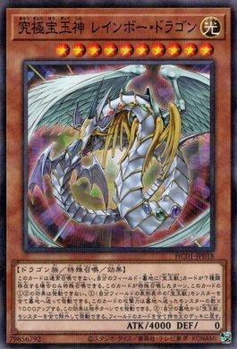
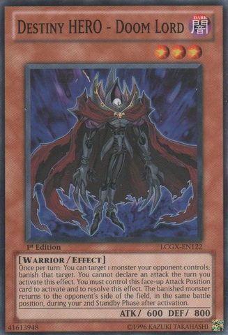

Modo Dark e modo Light

Sinopse da Terceira Temporada

O enredo de Yu-Gi-Oh! GX é situado 10 anos após a série original. A história gira em torno de Jaden Yuki, um duelista jovem e talentoso que ganha a carta Kuriboh alado de yami yugi, agora adulto. Ele entra para a Academia de Duelos, um colégio interno duelitista fundado por Seto Kaiba. Jaden, que recebeu notas baixas no seu teste de admissão, mas que ganha o duelo de admissão contra Crowler é colocado no dormitório Slifer Vermelho, que é reservado para alunos com notas mais baixas. Mas se vê envolvido na solução de segredos escondidos da academia. Jaden faz vários amigos e rivais e assume muitos desafios em sua busca para se tornar o próximo Rei dos Jogos. |
|
JAIDEN YUKI |

SYRUS TRUESDALE |
CHAZZ PRINCETON |
|
ZANE TRUDESDALE |
ASTER PHOENIX |
JESSE ANDERSON |
|
NEOS |
CYBER DRAGON |
YUBEL |
|
PODER DO VINCULO |

DRAGÃO ARCO-ÍRIS |
KARIBOU ALADO |
|
HOMEM CHAMA-ALADO |
OJAMA REI |

SENHOR DA CONDENAÇÃO |